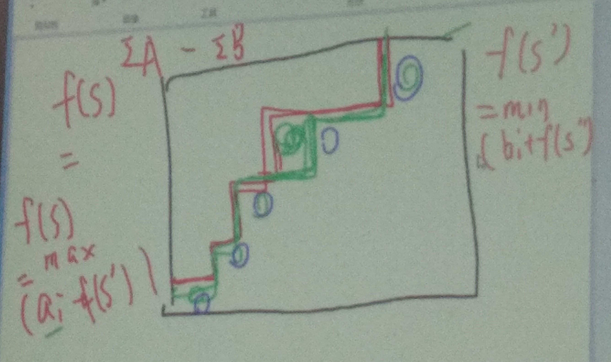

第四天
| 笔记信息 | |
|---|---|
| 作者 | Gingmzmzx |
| 时间 | 2023-10-2 |
| 教师 | 周天宝 |
日常膜拜
上午
一、状态压缩
# Luogu P4363 一双木棋
- 小提示：状态压缩压边界线就可以
- 图解：

# Luogu P5369 最大前缀和
# Luogu P5492 随机算法
# 拓扑序计数
- 题目描述：
给定一张有向无环图，求其合法拓扑序个数
- 题解：
# 边子集拓扑序计数
- 题目描述：
- 给定一张有向图（不一定是DAG）。设其边集为
- 对于定义为保留时的合法拓扑序个数
- 求
- 题解：
# Luogu P2831 愤怒的小鸟
# Luogu P3959 宝藏

二、优先队列优化DP
# 经典例题：滑动窗口
-
题目描述（
GitHub Copilot）：给定一个长度为的序列，求其所有长度为的连续子序列中的最大值
洛谷上的题目：Luogu P1886 滑动窗口，与
GitHub Copilot描述的题目稍有差别 -
题解（
GitHub Copilot）：- 用一个优先队列维护当前窗口内的最大值
- 每次窗口滑动时，将窗口左端点的值出队，右端点的值入队
- 时间复杂度
-
实现代码（
GitHub Copilot）：#include <iostream> #include <queue> using namespace std; const int N = 1e6 + 10; int n, k, a[N]; priority_queue<pair<int, int>> q; int main() { cin >> n >> k; for (int i = 1; i <= n; i++) cin >> a[i]; for (int i = 1; i <= k; i++) q.push({a[i], i}); cout << q.top().first << ' '; for (int i = k + 1; i <= n; i++) { q.push({a[i], i}); while (q.top().second <= i - k) q.pop(); cout << q.top().first << ' '; } return 0; }
# 经典例题：中位数
- 题目描述（
GitHub Copilot）：给定一个长度为的序列，求其所有长度为的连续子序列中的中位数
- 题解（
GitHub Copilot）：- 用两个优先队列维护当前窗口内的最大值和最小值
- 每次窗口滑动时，将窗口左端点的值出队，右端点的值入队
- 时间复杂度
- 实现代码（
GitHub Copilot）：#include <iostream> #include <queue> using namespace std; const int N = 1e6 + 10; int n, k, a[N]; priority_queue<int, vector<int>, greater<int>> q1; // 小根堆 priority_queue<int> q2; // 大根堆 int main() { cin >> n >> k; for (int i = 1; i <= n; i++) cin >> a[i]; for (int i = 1; i <= k; i++) { if (q2.empty() || a[i] <= q2.top()) q2.push(a[i]); else q1.push(a[i]); if (q1.size() > q2.size()) { q2.push(q1.top()); q1.pop(); } if (q2.size() > q1.size() + 1) { q1.push(q2.top()); q2.pop(); } } cout << (q2.size() > q1.size() ? q2.top() : (q1.top() + q2.top()) / 2) << endl; for (int i = k + 1; i <= n; i++) { if (a[i - k] <= q2.top()) q2.pop(); else q1.pop(); if (q2.empty() || a[i] <= q2.top()) q2.push(a[i]); else q1.push(a[i]); if (q1.size() > q2.size()) { q2.push(q1.top()); q1.pop(); } if (q2.size() > q1.size() + 1) { q1.push(q2.top()); q2.pop(); } cout << (q2.size() > q1.size() ? q2.top() : (q1.top() + q2.top()) / 2) << endl; } return 0; }
# 简单应用：Luogu P2216 理想的正方形
# Luogu P2219 修筑绿化带
# 求最大全0正方形
- 题目描述：（Luogu P4259待修）
给定一个的0/1矩阵，求其最大的全0正方形的边长
- 题解：
- 带log的做法：枚举每个点作为左上角，二分正方形边长
- 不带log的做法：
-
GitHub Copilot这样说：
这是一个经典的计算机科学问题，可以使用动态规划来解决。我们可以定义一个二维数组，其中表示以为右下角的最大全0正方形的边长。那么，我们可以得到以下状态转移方程：其中，表示矩阵中第行第列的元素。
最终，我们只需要遍历数组，找到其中的最大值即可。
这个方法的时间复杂度是，因为我们需要遍历整个矩阵来计算数组，然后再遍历一次数组来找到最大值。
-
# Luogu P2254 瑰丽华尔兹
# Luogu P4381 Island
- 题目大意：
给一个集环树，求直径 - 题解：
# Luogu P5665 划分

# Luogu P5824 十二重计数法
# Luogu P3702 序列计数
# Luogu P3773 吉夫特
# Luogu P5664 Emiya 家今天的饭
三、高维前缀和
没有记下来哦~